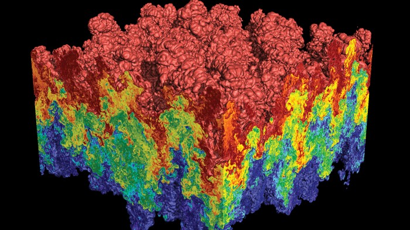

|
VisIt: An End-User Tool for Visualizing and Analyzing Very Large Data  VisIt is an open source, turnkey application for large scale simulated and experimental data sets. Its charter goes beyond pretty pictures; the application is an infrastructure for parallelized, general post-processing of extremely massive data sets. Target use cases include data exploration, comparative analysis, visual debugging, quantitative analysis, and presentation graphics.The VisIt product delivers the efforts of many software developers in a single package. First, VisIt leverages several third party libraries: the Qt widget library for its user interface, the Python programming language for a command line interpreter, and the Visualization ToolKit (VTK) library for its data model and many of its visualization algorithms. On top of that, an additional fifty man-years worth of effort have been devoted to the development of VisIt itself. The VisIt-specific effort has largely been focused on parallelization for large data sets, user interface, implementing custom data analysis routines, addressing non-standard data models (such as adaptive refinement meshes (AMR) and mixed materials zones), and creating a robust overall product. VisIt consists over one and a half million lines of code, and its third party libraries have an additional million lines of code. It has been ported to Windows, Mac, and many UNIX variants. The basic design is a client-server model, where the server is parallelized. The client-server aspect allows for effective visualization in a remote setting, while the parallelization of the server allows for the largest data sets to be processed reasonably interactively. The tool has been used to visualize many large data sets, including a two hundred and sixteen billion data point structured grid, a one billion point particle simulation, and curvilinear, unstructured, and AMR meshes with hundreds of millions to billions of elements. Further, research efforts have scaled the tool up to work on synthetic data sets with trillions of elements. The most common form of the server is as a stand alone process that reads in data from files. However, an alternate form exists where a simulation code can link in "lib-VisIt" and become itself the server, allowing for in situ visualization and analysis. VisIt follows a data flow network paradigm where interoperable modules are connected to perform custom analysis. The modules come from VisIt's five primary user interface abstractions and there are many examples of each. There are twenty one "plots" (ways to render data), forty-two "operators" (ways to manipulate data), over one hundred file format readers, over fifty "queries" (ways to extract quantitative information), and over one hundred "expressions" (ways to create derived quantities). Further, a plugin capability allows for dynamic incorporation of new plot, operator, and database modules. These plugins can be partially code generated, even including automatic generation of Qt and Python user interfaces. The VisIt project originated at Lawrence Livermore National Laboratory, but it has gone on to become a distributed project being developed by many groups, including researchers at the University of Oregon. Hank Childs of UO served as the project architect since its inception in 2000 until becoming a faculty member in 2013. PeoplePublications
|